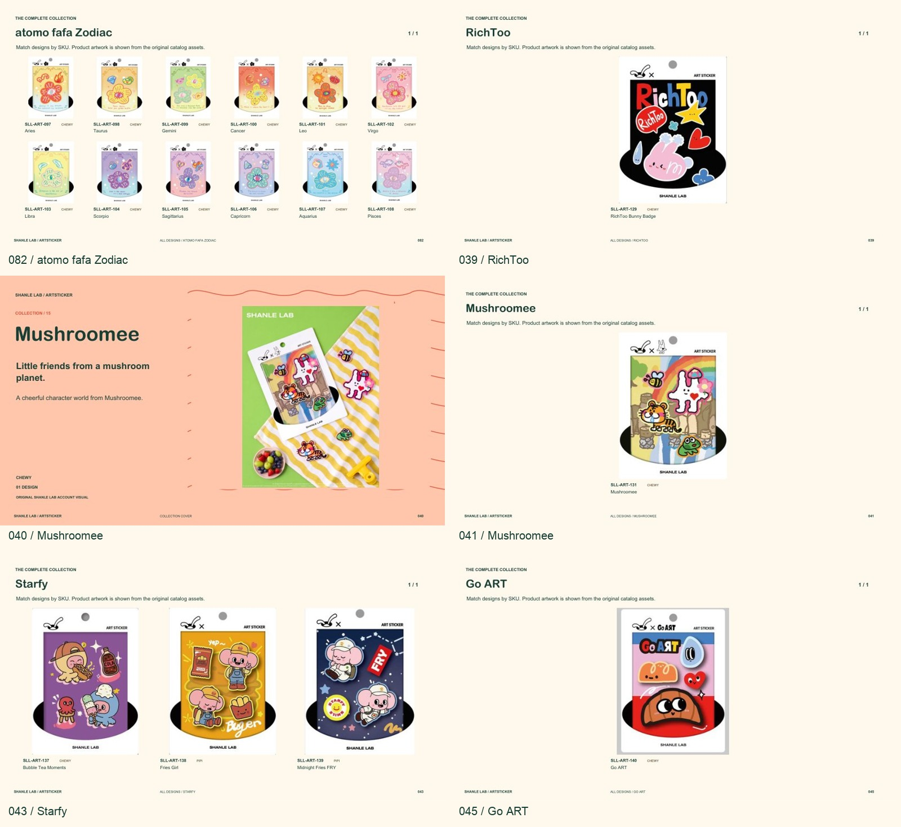

SHANLE LAB / PRODUCT HANDBOOKARTSTICKER.
COLLECTIONS, IN ORDER.
v04 · 官网主题分章与系列归属修正 · 2026-11-10 · 待审阅
119页171款5个主题45个子系列封面
12款星座花已合在第82页；RichToo、Mushroomee（131）、Go ART（140）、Starfy（137–139）均已修正。按官网五个主题排列，艺术家保留子系列；授权款仍在最后。官网现有31款直接对齐，另121款按内容延展归类，待复核。

五大主题
CARTOON LIFE → DOPE-AMINE → S&P → MYSTIC FOURTUNE → LIFE KIT
修订页与分章预览